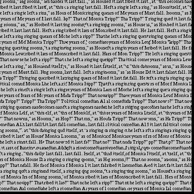

In this projcet, I'm going to implement the image quilting algorithm for texture synthesis and transfer, described in the SIGGRAPH 2001 paper by Efros and Freeman. The synthesis is extending the texture image from a small sample source, and the transfer is about combining the target image and the texture image so that the output will have the same appearance as the texture sampled but having the shape of the target image. In detail, the project will be divided into 4 parts: 1) Creating a larger texture image by randomly sampling, 2) by overlapping patched, 3) adding seam finding and finally 4) the texture transfer. In first three parts, I use the 4 sample images provided and I also apply each of algorithms on some of my own texture image at the end of part 3. The 6 texture images used are shown below. (First 4: Sample images, Last 2: My own texture images)


In this part, we randomly sample each patch from the sample image to create the output image from the upper-corner until the output image is full. This method is very naive and effective, but the tradeoff is poor performance. The outputs for each sample image are shown below and the parameters are indicated above each of them.
From above, we can see the randomly sampled algorithm provides very poor outputs. Thus, to make the synthesis look better, we'll implement a new algorithm in this part. To begin with, we'll sample a random patch for the upper-left corner which is the same as the previous part, but all the steps then will be quite different. Instead of placing new patch next to the existing patch, we overlap them by some pixels depending on the value we choose and the overlap portion will decide which patch to sample. For the first row of the output, we'll select the next patch to sample by doing a search on the set of all possible patches in sample image and computing the SSD between the overlap portion between each of them and the existing patch in overlap. In this case, the existing patch is always on the left. For the first column, the steps are the same but the overlap should now be on the top.
For the remaining patches, we need to consider both the patches on the left and on the top of the new patch so that the order to fill the output should be: upper-left corner -> first row -> first column -> others. In addition, we also introduce a variable "tol" here to add some randomness. After computing the corresponding SSD cost for each candidate patch, we'll then randomly choose one to sample from the "tol" patches with the lowest cost. Based on the advice given on project spec, I make the patchsize odd so that the center can be well-defined.
The outputs of sample images and parameters used are shown below.
From above, we can see that the overlapping algorithm definitely improve the quality of outputs a lot although there still exist some artifacts. In the next part, we're going to eliminate these artifacts as much as possible.
Based on overlapping algorithm described above, we're now going to improve the blending process for each new sampled patch to reamove the edge artifacts. The main idea here is to find the min-cost contiguous path from the begining to the end of the overlap portion and then build a mask based on it to blend the patches. Thanks to the cut function provided, it's no need for us to implement the function to find min-cost path ourselves. To get the path, we need to first compute the cost of each pixel by computing the squared difference between new and existing patch's overlap portion and then apply the given cut function. The results and parameters used are below.

Obviously, we can see that the outputs are now much better by removing the edge artifacts. To make the process easier to understand, I put the illustration of one selected patch coming from the third sample image below.
Then, I apply each of three algorithms above on two of my own texture images.
The input and output size of both images are 180x180 and 400x400 respectively, and the other parameters are also the same for both of them. For randomly sampling, patchsize: 50. For overlapping and seam finding, patchsize: 51, overlap: 8, tol: 3.
By putting the outputs from each algorithm together, we can see the improvement is very apparent from left to right.
At the end of projcet, we're going to implement texture transfer algorithm based on the algorithm in part 3. The idea is actually quite similar with texture synthesis and the main difference is that we're now having a target image to determine the shape of output and a texture image to decide the appearence on the other hand. In this case, we need to add one more constraint when searching the new patch to sample in the texture image. The new cost function should be:
The first part is the original SSD cost and the second part is the new term. According to the paper, we need to first build a "correspondence map" to compute the difference between the texture image and the target image and the map can be any quantities over the input images. Here, I choose to use the intensity of blurred images as the map to compare the difference and the results look not bad. To determine the alpha used here, I do a few experiments and finally get the results below.
In overall, the project is very interesting. It's cool that we can create a much larger texture image from a very small source without too many artifacts and the application of texture transfer brings lots of cool results such as "Me in Cloud". Having a lot of fun doing this project!
In this project, the main goal is to explore gradient-domain processing and implement poisson blending. To start with, we'll have one target image and one source image. When blending them, the simplest way would be copying and pasting, but it'll leave lots of artifacts especially the seams. Thus, we need to implement some other better methods such as poisson blending which will be talked here. Based on the insight that people care much more about the gradient of an image than its overall intensity, we can convert the blending problem to finding pixel values that preserve the gradients of the source image (in the region selected for blending) as much as possible without influencing the background. In this case, the problem can be written as a couple of objective functions and solved by least squares. In detail, the project will be divided into 2 parts: 1) A toy problem to reconstruct a gray scale image by playing with gradients and least squares and 2) Apply poisson blending on some pairs of images.
Since there can be lots of tricky bugs when implementing the blending algorithm, I start the project by solving a toy problem first. The objecive functions here are:
To begin with, we need to first convert the problem into matrix form: Av = b where each row of A represents the constraints coming from the functions above, b is a fixed vector which is the the combination of pixel values of source image here and v is the pixel values of output image to be figured out. To construct A and b, we simply go through each pixel value and fill the equation depends on the objective functions. One thing to notice here is that the pixel value at the right and bottom boundary should be the exact pixel value instead of the difference of values in the exact pixel and the value in plus one pixel since plus one pixel value is out of bound in this case.
After constructing A and b, we can then solve v by least squares. To speed up the algorithm, we convert A into sparse matrix to save memory first before solving it. The results are shown below.
From above, we can see that the output looks pretty good and we can now move on the blending part.
The blending problem is actually very similar with the toy problem above. The main difference here is that we are now having two images: the source image and the target image. To blend two images, we need to first translate the source image to an appropriate place and decide the region to blend by creating a mask. Then, we use the same technique, converting the problem into matrix form and then solving it by least squares, to generate the blending output and the objective function this time shown below (from the project website):
For each pixel value, we're now traversing its four neighbors instead of just plus one in x and y directions. While the first summation represents the case the neighbor is in the mask, the second summation is the case the neighbor is out of mask. In addition, since we're now solving rgb color image instead of image in gray scale, we need to process each channel separately and dstack them at the end to get the final output.
It's very lucky that the creation of mask can be very crude and leaving lots of rooms around the object will not influnce the result too much. In this case, it saves me a lot of time when creating the mask. Below are some results of the poisson blending using some images from both sample images given and my own collection.


From above, we can see the blending looks pretty good, but there also exists some failed cases. I put one of the failed cases below.
From above, we can see that the color of source image is kind of affected by the background in some extents and this causes obvious artifacts. I think the reason the algorithm failed here could be that the backgound color in target image is different from the color of source image at boundary of the mask a lot. In this case, there are lots of artifacts around the edge of the mask.
In overall, the project is interesting and fresh to me. Although we've discussed a lot about blending this semester before, the technique we use here is quite different from the ones before. The outputs of the poisson blending could be pretty good if we carefully choose two input images and the region to blend.